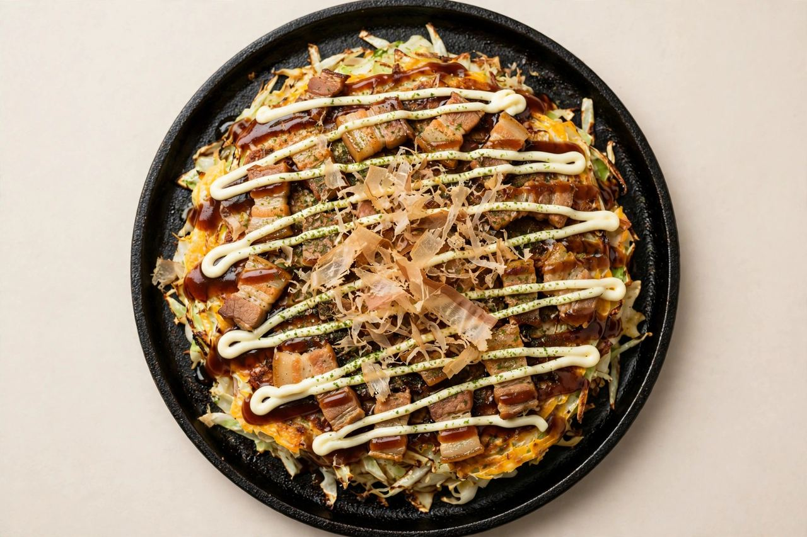

What is okonomiyaki?
A savory pancake of batter, shredded cabbage, and your choice of fillings — grilled and loaded with sweet-savory sauce, mayo, bonito flakes, and seaweed. Okonomi means "as you like it": you choose what goes in.
Osaka vs Hiroshima — pick your style
- 大阪風 Osaka style: everything mixed into one thick pancake, grilled on both sides. The classic.
- 広島風 Hiroshima style: ingredients layered — crepe-thin batter, mountain of cabbage, yakisoba noodles, fried egg on top. Taller, more complex, almost always includes noodles.
Both are "correct." Osaka invented it; Hiroshima perfected the architecture.
Do you cook it yourself?
- Osaka style: many shops have you grill it yourself on the table hotplate — staff will show you. Others cook it in the kitchen.
- Hiroshima style: always cooked by staff on the big grill in front of you.
- Rule: if there's a batter bowl and an empty hotplate, it's DIY. When in doubt, ask: "yaitte moraemasu ka?" （焼いてもらえますか？— "can you cook it for me?")
Popular fillings
豚玉 butatama (pork) is the default order. Also: いか ika (squid), えび ebi (shrimp), チーズ cheese, もち mochi, and the loaded ミックス mix.
Allergens and dietary check: is okonomiyaki safe for you?
What a typical okonomiyaki contains. Recipes vary by shop, so use this to know what to ask, then confirm with the staff. Tap an allergen for its Japanese restaurant card.
| Allergen / diet | Contains? | Why |
|---|---|---|
| Wheat / gluten | Yes | The batter is wheat flour; the sauce contains wheat. |
| Egg | Yes | Egg in the batter; mayonnaise topping. |
| Fish / dashi | Yes | Dashi in the batter and bonito flakes on top. |
| Shellfish | Often | Shrimp and squid fillings; shared griddle. |
| Pork | Often | Pork belly is the standard filling. |
| Soy | Often | The sauce usually contains soy. |
| Dairy | Sometimes | Cheese filling, and some batter mixes add milk. |
| Vegetarian? | No | Fish stock and bonito flakes even without meat. |
Several allergies? Build one card with our printable Japanese allergy card. Also see halal and vegetarian and vegan cards. This is travel information, not medical advice.
Common questions
Is it like a pizza or a pancake?
Neither, really — closer to a savory cabbage fritter the size of a dinner plate. Forget Western comparisons; it's its own thing.
What's monjayaki?
Tokyo's runnier cousin — more batter, gooier texture, eaten straight off the grill with a tiny spatula. Different dish, same family.
Is okonomiyaki gluten-free?
No. The batter is wheat flour and the sweet brown sauce contains wheat. Hiroshima style also adds wheat noodles.
Does okonomiyaki contain seafood?
Often. Bonito flakes go on top, the batter is usually mixed with dashi, and shrimp and squid are common fillings cooked on a shared griddle.
Can I get vegetarian okonomiyaki?
It is difficult. Even without meat, the batter uses fish stock and the topping is bonito flakes. Some shops can leave off the flakes, but ask about the batter.